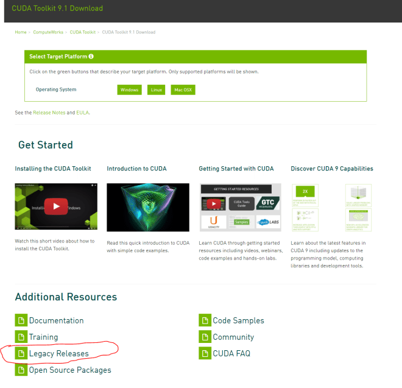
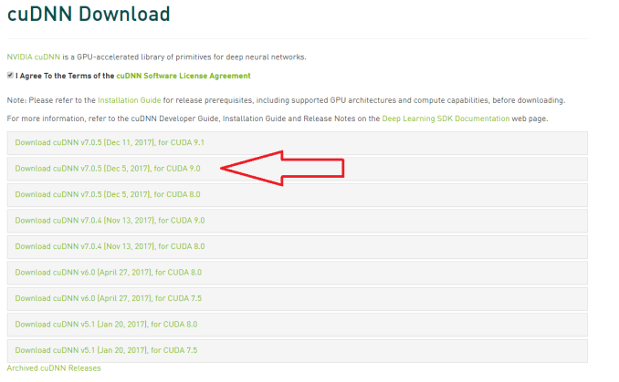
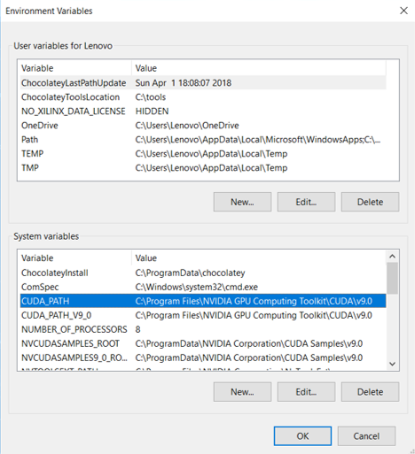
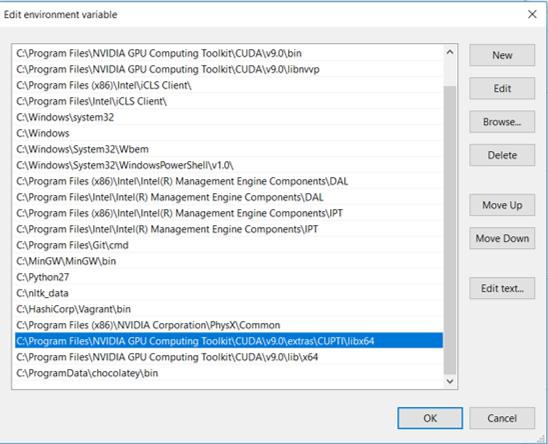
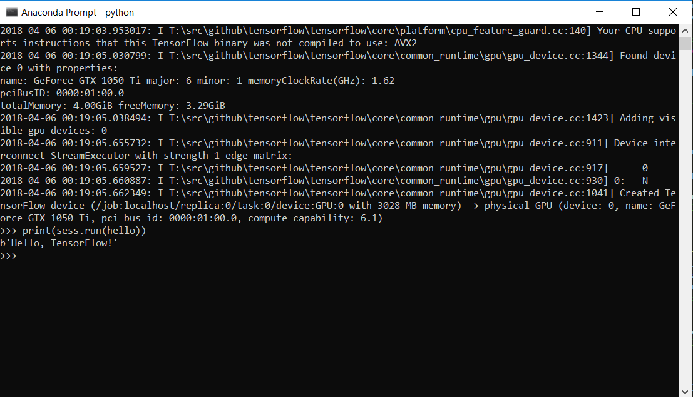

On November 9, 2015 Google open sourced a software library called TensorFlow. TensorFlow is a software library used for Machine learning and Deep learning for numerical computation using data flow graphs. It can run on multiple CPUs and GPUs.
Since deep learning algorithms runs on huge data sets, it is extremely beneficial to run these algorithms on CUDA enabled Nvidia GPUs to achieve faster execution.
When I wanted to install TensorFlow GPU version on my machine, I browsed through internet and tensorflow.org for steps to download and setup. I could not find any good and clear source for setting up TensorFLow on local machine with GPU support for Windows. Most of the information available online was for Linux or Mac OS. Most search results online said there is no support for TensorFlow with GPU on Windows yet and few suggested to use virtual machines on Windows but again the would not utilize GPU.
Then I decided to explore myself and see if that is still the case or has Google recently released support for TensorFlow with GPU on Windows. After refering few pages on tensorflow.org I was able to setup TensorFlow GPU version on my Windows machine with ease. So now it is possible to have TensorFlow running on Windows with GPU support.
Requirements
- CUDA® Toolkit 9.0.
- The NVIDIA drivers associated with CUDA Toolkit 9.0.
- cuDNN v7.0 for CUDA® Toolkit 9.0.
- GPU card with CUDA Compute Capability 3.0 or higher for building from source and 3.5 or higher for our binaries. See NVIDIA documentation for a list of supported GPU cards.
Installing the CUDA Drivers
At the time of writing, the TensorFlow-gpu builds support CUDA 9.0. If you visit the CUDA downloads site here, you'll notice that it will take you to the latest version (right now it's 9.1), so be sure to download the right version of the driver by selecting the Legacy Resources link at the bottom of the downloads screen:
Of course, as CUDA and TensorFlow get updated, these versions will change. If you have the incorrect version, TensorFlow will warn you (I'll show you where later in this article) and you'll have to go back to this site to get the correct version. So please refer the tensorflow documentation.
Installing the CuDNN Libraries
The CuDNN libraries are an update to CUDA for deep neural nets and are used by TensorFlow to accelerate deep learning on NVidia GPUs. You can download them from here. You'll have to sign up for an NVidia developer account first, but it's pretty quick and costs nothing. Once you've signed in, you'll see a variety of CuDNN downloads. Here's where you'll have to match to the version of CUDA that you downloaded in the previous section. So, for example, I used CUDA 9.0, so I made sure I used a CuDNN that matches both this and the required version you saw in the last step (in my case version 7) — I chose cuDNN v7.0.5 for CUDA 9.0.
This will download a ZIP file with several folders, each containing the CuDNN files (one DLL, one header, and one library). Find your CUDA installation... should be at something like:
C:\Program Files\NVIDIA GPU Computing Toolkit\CUDA\v9.0Environmental variables
Ensure after installing CUDA toolkit, the CUDA_HOME is set in the environmental variables. If not then you need to add it manually..
And path variables as..
Installing Tensorflow-gpu
We will install Anaconda as it helps us to easily manage separate environments for specific distributions of Python, without disturbing the version of python installed on your system. You can install from here Anaconda.
Create conda environment
Create new environment, with the name tensorflow-gpu and python version 3.5.2
C:> conda create -n tensorflow pip python=3.5Activate the environment
Activate the conda environment by issuing the following command:
C:> conda activate tensorflowInstall Tensorflow-gpu
Issue the appropriate command to install TensorFlow inside your conda environment. To install the GPU version of TensorFlow, enter the following command (on a single line):
(tensorflow)C:> pip install --ignore-installed --upgrade tensorflow-gpu Validation
Now, its all done setting up and installing tensorflow-gpu. Let's test and validate your installation.
Start Anaconda and activate your tensorflow environment by the lines:
C:> conda activate tensorflowInvoke python from your shell as follows:
$ pythonEnter the following short program inside the python interactive shell:
>>> import tensorflow as tf
>>> hello = tf.constant('Hello, TensorFlow!')
>>> sess = tf.Session()
>>> print(sess.run(hello))
If the system outputs the following, then you are ready to begin writing TensorFlow programs:
If you find any difficulty in the tutorial or any problem or error in installation and validation do not hesitate to post a comment below.